Docker output,
made readable.
docker ps wraps on any normal terminal. docker inspect prints
400 lines of JSON. dok reads the same socket and prints it for humans — colour that
means something, compose grouping, human sizes and ages.
What eza is to ls.

Every screen static, pipeable, read‑only.
No TUI to learn, no state to keep. Each command prints one screen and exits, drops colour and icons automatically when it is not a terminal, and never starts, stops, execs into or removes a container.
dok ps
Containers grouped by compose project — service name, state dot, health mark, :8080→80 ports, relative age.
dok ports new
Every published port in one flat table sorted by host port. Answers “who owns 5432?” in one line.
dok images
Size and age gradients, dangling marked reclaimable.
dok df
Disk usage per category with used and reclaimable bars.
dok inspect
The 400-line JSON folded into sections, secrets masked.
dok logs
Merged tail, level colouring, JSON exploded.
dok tree
Projects, networks with IPs, volumes with mounts.
dok stats
Live CPU, memory and IO dashboard.
dok top
Processes inside containers, nested by parent PID.
dok events
Daemon events, colour-coded by type and action.
dok update
Check for a release and install it in place.
Which container owns port 5432?
docker ps spreads ports down a column, wrapped and interleaved with
everything else. dok ports is one row per published binding, sorted by
host port — a glance, or a grep.
Exposed-but-unpublished ports are left out; nothing on the host can reach them. The IPv4/IPv6 pair Docker reports for a wildcard binding collapses into one row. Two containers claiming the same socket are both marked.
PORT BIND PROTO CONTAINER PROJECT TARGET ● 80 all tcp web demo-shop 80 ● 443 all tcp web demo-shop 443 ● 3001 all tcp grafana observability 3000 ● 5432 127.0.0.1 tcp postgres demo-shop 5432 ● 6379 all tcp redis demo-shop 6379 ● 8080 all tcp api demo-shop 3000 6 ports · across 5 containers

Palette, glyphs and layout — not just colour.
Ten built in, including a pure-ASCII one for CI logs and serial consoles. A theme carries nine semantic colour roles, a glyph set for state dots, tree stubs, bars and arrows, and a layout: header treatment, gutters, rules, separators.
Start from any built-in in ~/.config/dok/config.toml and
override whichever roles you like.
Nine ways in. One binary, no runtime.
All it needs is a reachable Docker daemon — it honours
DOCKER_HOST, the default socket, and Windows named pipes. Every command
takes --demo to run offline against a built-in example stack.
Homebrew
brew install alsaadii98/tap/dokmacOS and Linux.
Cargo
cargo install dok-cliCrate is dok-cli, binary is dok.
Debian / Ubuntu
sudo dpkg -i dok_amd64.debFrom the releases page.
Fedora / RHEL
sudo rpm -i dok.x86_64.rpmAlpine
apk add --allow-untrusted ./dok-x86_64.apkStatic musl, no dependencies.
Arch
makepkg -si -p PKGBUILD-binFrom packaging/aur.
Nix
nix run github:alsaadii98/dokWindows · Scoop
scoop bucket add dok https://github.com/alsaadii98/dok
scoop install dok/dokBinary
tar xzf dok-*.tar.gz && sudo mv dok /usr/local/bin/Built to read, not to drive.
dok is not replacing lazydocker — use that when you want to drive containers, and dok when you want to read them.
| dok | docker ps --format | dops | lazydocker / oxker | |
|---|---|---|---|---|
| Static, pipeable output | Yes | Yes | Yes | Full-screen TUI |
| Compose grouping | Yes | No | No | Partial |
| Readable inspect | Yes | No | No | Partial |
| Port ownership table | Yes | No | No | No |
| Disk usage breakdown | Yes | No | No | Partial |
| Themes (palette + glyphs + layout) | Yes | No | No | No |
| Interactive control | No | No | No | Yes |
Questions
How do I make docker ps output readable?
Run dok ps. It reads the Docker socket directly and prints containers grouped by compose project with coloured state dots, health marks, short ids, published ports and relative ages, sized to your terminal width.
How do I find which container is using a port?
Run dok ports. It prints every published port across every container in one flat table sorted by host port, so finding the owner of 5432 is a glance or a grep. It skips exposed-but-unpublished ports, collapses the IPv4 and IPv6 rows Docker reports for a wildcard binding into one row, and marks any address, port and protocol claimed by two containers.
Is there a readable alternative to docker inspect?
dok inspect folds the inspect JSON into identity, state, config, resources, network, mounts and labels, masks credential-looking environment values by default, and highlights privileged mode, added capabilities, OOM kills and failing healthchecks.
What is a good docker ps alternative?
dok ps is a drop-in read-only alternative. Unlike docker ps --format it groups containers by compose project and shows the service name rather than the mangled container name, renders sizes and ages in human units, and shrinks columns to fit the terminal instead of wrapping.
How is dok different from lazydocker or ctop?
lazydocker and ctop are full-screen TUIs you drive interactively. dok prints one static, pipeable screen per command and is read-only: it never starts, stops, execs into or removes containers. That makes it safe to run against a production socket.
Does dok work without a Docker daemon?
Every command takes --demo, which renders a built-in example stack offline. Without it dok needs a reachable daemon and honours DOCKER_HOST, the default /var/run/docker.sock, and Windows named pipes.